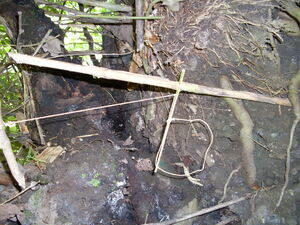
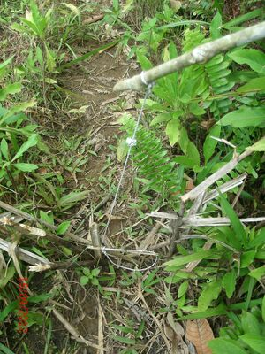

luyluy  
/luyluy/
n.
a trap
Eng. trap
OCM: Hunting and Trapping (224)
DDP: Trap (6.4.2)
Online dict status: -
Usage level: M
n.
a noose snare (for catching wild chickens by the neck)
Cult. The snare is made up of a short piece of damuluwan bamboo with a noose. This is attached to a spring pole made from the bagwanan shrub.
Nasagilut ka lieg te kalasanen te luyluy.
The neck of the wild chicken was caught in the snare.
Eng. noose snare; snare
Tag. bítag; sílò (loop); patibóng; umang; tambáng
Ceb. lit-ag?
Ilo.: sílo
OCM: Hunting and Trapping (224)
Online dict status: -
Usage level: R
v.
for someone (egluyluy, migluyluy/inluyluy, agent, eg><ø-) to set a snare to catch something (egluyluyen, inluyluy/migluyluy/pigluyluy, theme, eg><en-) somewhere (egluyluyan, inluyluyan/migluyluyan/pigluyluyan, location, eg><an-)
Egluyluyen ku ka tikling wey palees diyè te ilis te beuhan.
I will trap the bird and lizard there along the river.
Eng. snare; trap
OCM: Hunting and Trapping (224)
DDP: Trap (6.4.2)
Online dict status: -
Usage level: M
v.
(egpanluyluy, migpanluyluy/impanluyluy, panluyluy, eg><ø-paN-) to make a trap somewhere
Egpanluyluyan bes mulè seini ne dalan!
Oh! its traping way.
Eng. make trap
OCM: Hunting and Trapping (224)
DDP: Trap (6.4.2)
Online dict status: -
Usage level: M
Updated by: RJH,QDL,RAA,RAA,QDL,RJH
Last updated: 29/Jul/2014
This page last updated: 28-Dec-2019
Copyright © 2009-2014, Matigsalug Language Christian Association, Inc